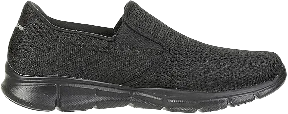
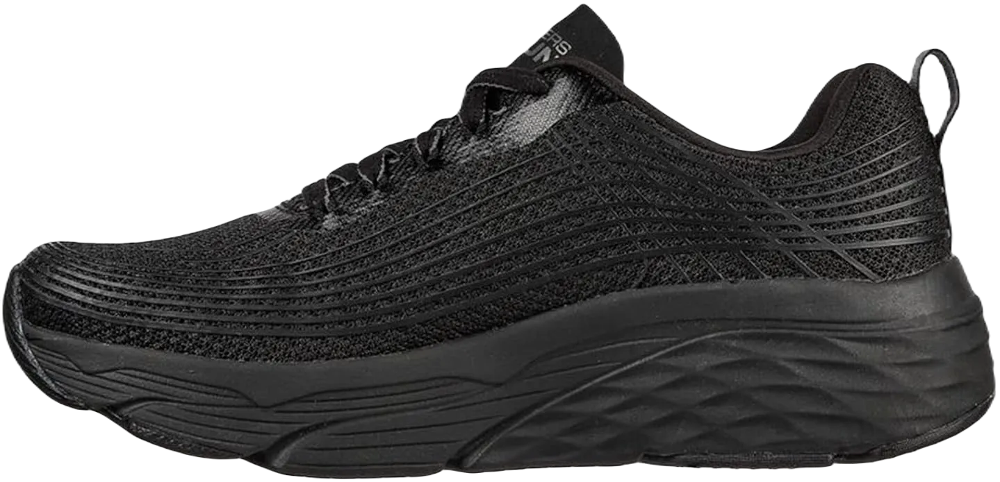
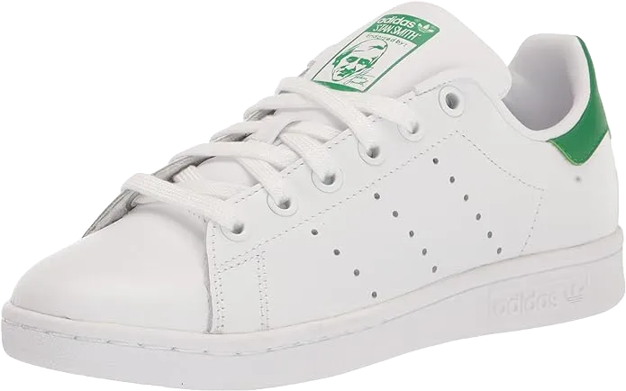

4 Best Running Shoes for Teenager Boys Reviewed in 2024
When it comes to finding footwear for your child, durability and cost are key considerations for every parent. Kids tend to wear out their shoes quickly, often leading to them needing replacements sooner than expected. No one wants to spend a significant amount on shoes that will break down after just a few months of use.
Spending a lot on a shoe can be worthwhile if it lasts over time, but there is a limit to what one should spend. The goal is to find a quality option that is both affordable and designed to withstand the rigors of active play for a long time.
-
#1
Classics of vehicles Slip-on
The Vans Slip-On Mid Classic is crafted from 100% canvas material and features a convenient slip-on design. It's highly breathable, ensuring your child's feet won't sweat, even if they wear them all day long.
The shoe includes a cushioned collar and insole to maximize comfort. The folded collar helps prevent cramping, while the padded footbed provides shock absorption and extra support for the heel and forefoot.
The outsoles are durable and robust. Although these shoes may be on the pricier side, their longevity makes them a worthwhile investment. -
#2
Adidas Sobakov shoes
.webp)
One thing that young people care about the most is style. While looking great is important, being a trendsetter can help you stand out from the crowd. The Adidas Sobakov shoes are the perfect choice to kickstart that journey.
These budget-friendly sneakers give you a celebrity-like appearance without emptying your wallet. Their sleek design allows you to maintain your swag, ensuring you feel comfortable all day long.
However, fashion without comfort is meaningless. Adidas understands this, which is why the Sobakov shoes feature a breathable upper. No matter how hot it gets—whether you’re out and about, on a casual stroll, or attending an indoor party—your feet will enjoy plenty of ventilation. -
#3
Interview with Chuck Taylor
The Chuck Taylor All Star High Top Sneaker perfectly combines high-quality materials with stylish design at an affordable price. If you're in search of a durable shoe that won’t break the bank, this is an excellent choice for you.
Crafted from synthetic materials, these shoes are built to last. The rubber toe cap protects the front of the shoe from wear and impact, while the thick rubber sole offers additional flexibility and comfort for the wearer.
However, there are a few drawbacks to consider. The rubber sole may limit flexibility, and some customers might find it necessary to adjust the fit since the shoe tends to run slightly larger than expected. -
#4
Adidas real Stan Smith
Another notable contribution from the Adidas brand to this list of top children’s shoes is the Adidas Originals Stan Smith sneakers, first released in the 1970s in honor of tennis star Stan Smith. If high school students are looking for stylish shoes that make them feel confident and respected in their community, these sneakers are an excellent choice.
Available in a variety of colors and styles, Adidas allows teens to select shades that best match their personal tastes and fashion preferences. With an upper made from premium leather that features ample ventilation, these shoes prioritize breathability while providing a sleek appearance.
The sneakers have a low-cut design with a lace-up closure, making them one of the most popular styles today. The Stan Smith logo is prominently displayed on the shoes, serving as a reminder of their rich history.